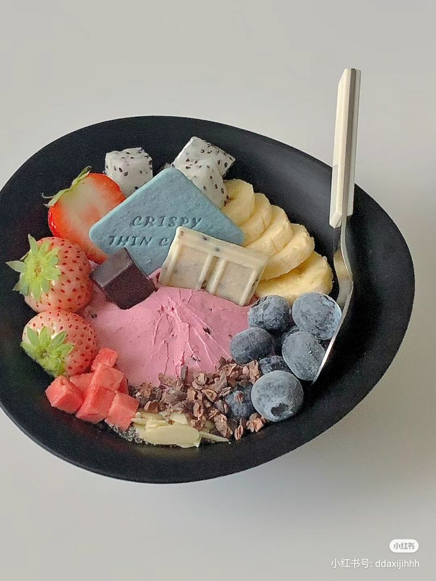

Ingredients
- 2 cups plain yogurt (Greek or regular)
- 1/4 cup honey or maple syrup
- 1/2 cup mixed berries (fresh or frozen)
- 1/4 cup granola
- 1/4 cup nuts (almonds, walnuts, or your choice)
- Chia seeds (optional, for topping)
Instructions
- In a bowl, mix the yogurt with honey or maple syrup until well combined.
- Layer the yogurt mixture in a serving bowl or cup.
- Add a layer of mixed berries on top of the yogurt.
- Sprinkle granola and nuts over the berries.
- If desired, add chia seeds on top for an extra crunch.
- Enjoy immediately or chill in the fridge for a refreshing treat later!